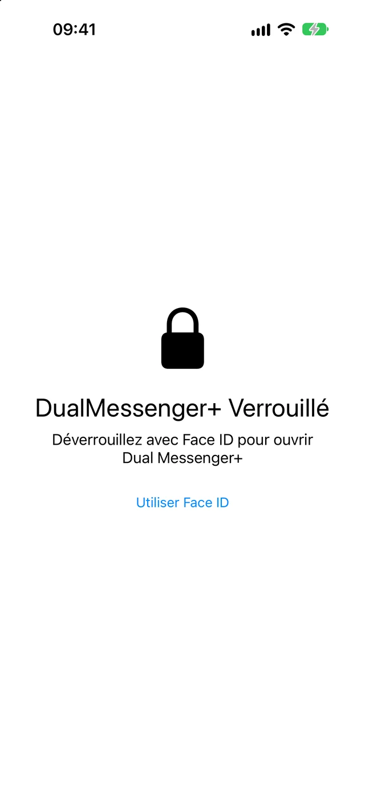
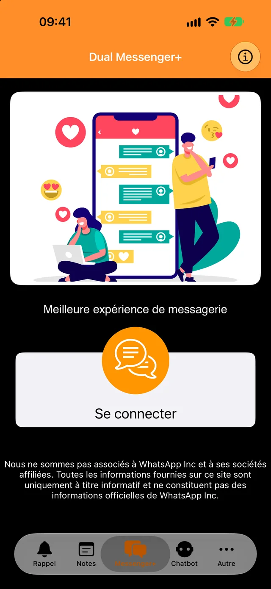
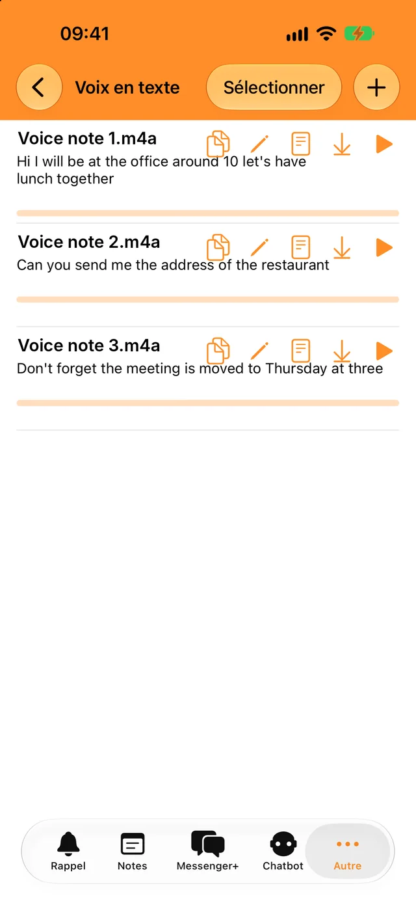
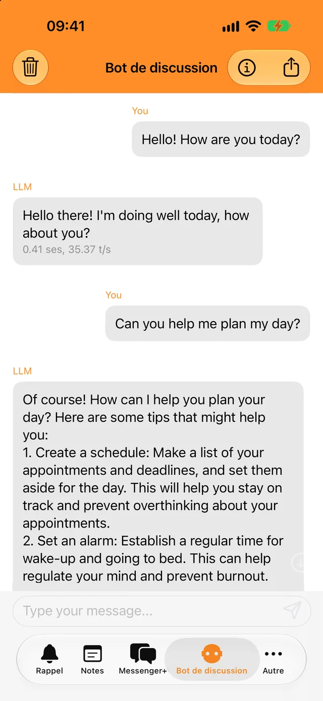
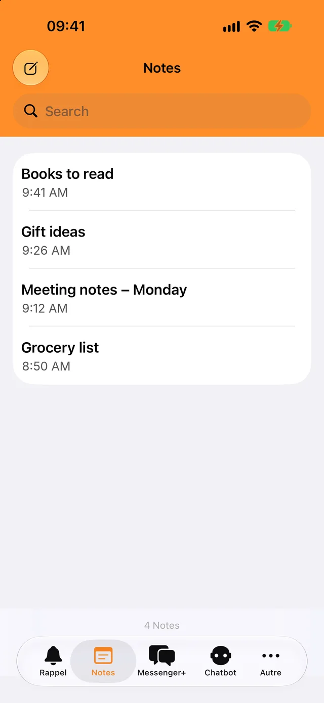

Verrouillez avec Face ID ou votre code
Vous seul pouvez ouvrir l’app et vos conversations. Choisissez un verrouillage immédiat ou au bout de quelques minutes.
Ajoutez votre second compte en quelques secondes et séparez vos conversations pro et perso.
Téléchargement gratuit. Pour iPhone, iPad et iPhone Duo.

Un verrou pour vos conversations et quelques outils du quotidien, réunis dans la même app.

Vous seul pouvez ouvrir l’app et vos conversations. Choisissez un verrouillage immédiat ou au bout de quelques minutes.

Transcrivez vos messages vocaux et fichiers audio dans votre langue et copiez le texte où vous voulez.

Posez des questions rapides, même hors ligne. Vos échanges avec le bot ne quittent jamais votre téléphone.

Notez ce qui compte, retrouvez-le grâce à la recherche et recevez une notification à l’heure du rappel.
Vous avez besoin du téléphone où se trouve votre second compte WhatsApp, juste un instant.
Touchez Se connecter. Un code QR s’affiche à l’écran.
Allez dans Réglages, puis Appareils connectés, et touchez Connecter un appareil.
Pointez ce téléphone vers le code QR. Vos conversations s’ouvrent dans Dual Messenger+.
WhatsApp garde un appareil connecté tant que vous utilisez WhatsApp sur votre téléphone au moins une fois tous les 14 jours.
Dual Messenger+ n’a aucun serveur qui voit vos messages. Il n’y a pas de compte à créer, et l’app ne contient ni publicité ni traceurs.
Les notes, rappels, enregistrements et échanges avec le bot sont enregistrés sur votre iPhone ou iPad.
Vous ne nous donnez ni nom, ni adresse e-mail, ni numéro de téléphone.
Face ID et Touch ID sont gérés par votre appareil. L’app ne reçoit jamais de données biométriques.
Téléchargez Dual Messenger+ pour iPhone et iPad.
Télécharger dans l’App Store